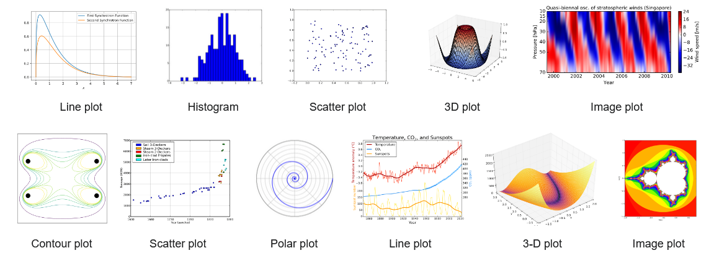

Plotting/Visualisierung#
Matplotlib ist eine sehr populäre Bibliothek für das Erstellen von Diagrammen bzw. grafischen Darstellungen im technisch-wissenschaftlichen Bereich.
Wie NumPy werden wir Matplotlib durch das gesamte Modul hinweg einsetzen, weshalb es sehr wichtig ist, dass die Grundlagen gut sitzen. Es handelt sich um eine sehr mächtige und vielseitige Bibliothek, die eine Vielzahl von Diagrammarten unterstützt. In folgender Abbildung sind typische Matplotlib-Diagramme dargestellt und die Vielseitigkeit lässt sich erahnen. Zusammen mit NumPy und SciPy (werden wir noch kennenlernen) bildet Matplotlib eine komplette und leistungsfähige Open-Source-Alternative zu proprietären Mathematiksoftware-Pakten (wie MATLAB o. ä.).

Blockinhalt#
Für die Einführung in Matplotlib bzw. die selbstständige Einarbeitung stehen die folgenden Notebooks bereit:
Einführung/Theorie/Cheat Sheet (vorliegendes Notebook)
Beispielaufgabe im Unterricht 02_MATPLOTLIB_Unterricht.ipynb
Übungsaufgaben 11_MATPLOTLIB_Uebungen.ipynb
Voraussetzungen#
Grundsätzliche Kenntnisse der verschiedenen Diagrammarten (Liniendiagramm, Scatterplot, Balkendiagramm, Histogramm etc.) sind vorteilhaft, aber nicht zwingend nötig. Die Matplotlib-Funktionen weisen in der Regel sehr viele Übergabeparameter auf, von denen häufig viele nicht explizit gesetzt werden müssen (Defaultwerte werden verwendet). Es ist daher ganz wichtig, dass keine Zweifel bestehen, wie eine Funktion in Python definiert und aufgerufen werden kann. Dies soll am nachfolgenden Beispiel nochmal repetiert werden, wobei eine Funktion func() definiert wird, die zwei Parameter a und b hat, wobei b mit dem Defaultwert 0 versehen wird.
def func(a, b=0):
return ...
Die Funktion kann auf verschiedene Arten aufgerufen werden. Wenn b nicht explizit übergeben wird, dann wird automatisch der Defaultwert b=0 verwendet. Alle folgenden Aufrufe sind möglich:
func(1) # a=1, b=0
func(a=1) # a=1, b=0
func(1, 2) # a=1, b=2
func(a=1, b=2) # a=1, b=2
func(b=2, a=1) # a=1, b=2
func(1, b=2) # a=1, b=2
Wenn die Argumentnamen bei der Übergabe verwendet werden (keyword arguments), spielt die Reihenfolge keine Rolle, was sehr nützlich ist bei Funktionen mit vielen Parametern und die Fehleranfälligkeit stark reduziert.
Was nicht geht, sind folgende Aufrufe, da nicht klar ist, wie die Argumente zuzuordnen sind:
func() # Error: Wert von a nicht definiert
func(a=1, 2) # Error: nach einem Keyword-Argument darf kein unbenanntes Argument kommen
1. Motivation#
Die Relevanz von grafischen Darstellungen im technisch-wissenschaftlichen (aber auch in allen andern Bereichen) ist selbsterklärend. In einem Diagramm können Zusammenhänge häufig viel kompakter/intuitiver repräsentiert werden, als es mit Worten bzw. einem alphanumerischen Output (Text, Tabelle etc.) möglich ist. Diagramme sind daher unverzichtbar für technische Berichte / Dokumentationen / Webseiten etc.
Im vorliegenden Notebook werden wir mit den nötigen Grundlagen beginnen, doch es wird nicht möglich sein alle Details zu besprechen. An dieser Stelle soll wiederum auf das entsprechende Cheatsheet hingewiesen werden, welches das wichtigste kompakt zusammenfasst. Ebenfalls sind die folgenden Ressourcen hilfreich für weiterführende Informationen:
Zu Beginn etwas verwirrend ist, dass zwei verschiedene Interfaces für Matplotlib existieren und mit beiden Interfaces das gleiche Ergebnis erreicht werden kann. Da beide Interfaces verbreitet sind, werden wir im Folgendenden beide anschauen. Es sei hier auch erwähnt, dass neben Matplotlib weitere Plotting-Bibliotheken existieren (z. B. seaborn, plotly, etc.), die in gewissen Aspekten (z. B. Interaktivität etc.) Vorteile bieten, i. Allg. jedoch sehr vergleichbar sind. Wir werden uns grundsätzlich auf Matplotlib konzentrieren (zum Vergleich aber allenfalls auch mal ein Diagramm anschauen, welches mit einer anderen Library erstellt wurde).
1.1 Import#
Üblicherweise benötigt man nur das Modul pyplot vom matplotlib-Paket und importiert dieses mit dem Alias plt . Der Import ist für beide oben erwähnten Interfaces identisch.
import matplotlib.pyplot as plt
1.2 Diagrammelemente#
Bevor wir ein erstes Diagramm erstellen, wollen wir uns kurz die verschiedenen Elemente anschauen, aus welchen ein Diagramm aufgebaut ist. In untenstehender Abbildung sind die verschiedenen Plotelemente markiert. Die wichtigsten für uns sind:
Figure: Diagrammbereich (Gesamtbild)
Axes: Plotbereich (Achsen)
X/Y axis label: Achsenbeschriftung (X-/Y-Achse)
Title: Diagrammtitel
Grid: Gitternetzlinien
Legend: Legende
2. Pyplot-Interface#
Das Pyplot-Interface (function-based, implicit) ist ideal für einfache Plots, die nicht mehreren Achsenpaare (XY-Achsen) bestehen. Dieses Interface ist perfekt geeignet, um z. B. temporär ein Signal darzustellen, um etwas zu kontrollieren etc. Wir werden dieses Interface sehr oft benützen, da mit sehr wenig Aufwand ein Diagramm erstellt werden kann.
Dieses Interface basiert auf Funktionen aus dem pyplot-Modul, mit denen das Diagramm bzw. die Achsen manipuliert werden. Die Figure sowie die Achsen werden im Hintergrund manipuliert und sind daher nur implizit präsent (daher wird dieses Interface auch als implizites bzw. funktionsbasiertes Interface bezeichnet). Ein einfaches Diagramm, um z. B. kurz ein Signal zu kontrollieren, ist damit mit sehr wenigen Code-Zeile möglich.
x = [1, 2, 3, 4, 5, 6, 7]
y = [0.1, 0.75, 1, 0.2, 0.75, 0.5, 1]
plt.plot(x, y)
plt.show()
Der obige Plot ist natürlich nicht vollständig, doch für Testzwecke durchaus aufschlussreich. Nachfolgend sind die wesentlichen pyplot-Funktionen aufgeführt, welche nötig sind, um ein qualitativ hochstehenderes Diagramm zu erstellen:
plt.figure()Erstellen der Figure mit gewünschten Diagrammeigenschaften (optional)plt.plot()Plotten einer Kurve mit gewünschten Eigenschaften (Punkte, Linie etc.)plt.xlabel()bzw.plt.ylabel()Setzen von Achsenbeschriftungenplt.xscale()bzw.plt.yscale()Einstellen der Achsenskalierung (‘linear’, ‘log’, …)plt.xlim()bzw.plt.ylim()Einstellen der Achsengrenzen (Limits)plt.title()Setzen des Diagrammtitelsplt.legend()Einfügen der Legendeplt.grid()Gitternetzlinien aktivierenplt.show()Diagramm ausgeben/anzeigen (siehe untenstehende Bemerkung)
Damit das Diagramm effektiv angezeigt wird, wird i. Allg. immer als letztes die Funktion
plt.show()aufgerufen. Dies wird klar, wenn in einer IDE (z. B. PyCharm) gearbeitet wird. Jupyterlab ruft diese Funktion automatisch auf, d. h. in Jupyterlab könnte diese Zeile auch weggelassen werden. Wir werden die Funktion jedoch immer explizit aufrufen.
Das obige Diagramm kann mit den genannten Funktionen nun vervollständigt werden und erhält dadurch ein ansprechendes Design und eine vollständige Beschriftung. Mehrere Kurven können ganz einfach durch mehrere Aufrufe von plt.plot() hinzugefügt werden.
plt.figure(figsize=(14,4))
plt.plot(x, y, 'o--r', label='Signal')
plt.xlabel('X-Achse')
plt.ylabel('Y-Achse')
plt.title('XY-Diagramm')
plt.legend()
plt.grid()
plt.show()
2.1 Diagrammtyp#
Analog zu obigem Liniendiagramm können diverse andere Diagramme erstellt werden, wobei je nach Plottyp zusätzliche Parameter vorhanden sind. Das grundlegende Vorgehen bleibt jedoch identisch.
plt.plot()Linienplot (Punkte)plt.scatter()Scatterplot (Punktewolken, Farbe bzw. Symbolgrösse kann als weitere Achse genutzt werden)plt.bar()Balkendiagrammplt.pie()Kuchendiagramm (Kreisdiagramm)plt.hist()Histogramm…
Wir werden primär mit numerischen (stetigen) Variablen zu tun haben, doch für Vergleiche kategorialer Variablen sind z. B. Balken- bzw. Kuchendiagramme (Kreisdiagramme) häufig zu sehen. Im Bereich der Statistik (Verteilungen) kommen Histogramme zum Einsatz.
parteien = ['FDP', 'Mitte', 'SP', 'SVP', 'GLP', 'GRÜNE', 'Übrige']
anteile = [14.25, 14.06, 18.27, 27.93, 7.55, 9.78, 8.16]
plt.pie(anteile, labels=parteien, autopct='%1.1f%%')
plt.title('Wähleranteile')
plt.show()
plt.bar(parteien, anteile, color='grey')
plt.ylabel('Wähleranteile [%]')
plt.show()
3. Axes-Interface#
Beim Axes-Interface (object-based, explicit) werden die Figure und die Achsen explizit erzeugt und dann mittels entsprechender Methoden manipuliert (es wird daher auch als objektbasiert bezeichnet, da es das Figure- bzw. das Achsenobjekt mit dazugehörigen Attributen/Methoden verändert etc.). Letztendlich werden dieselben Diagrammelemente wie beim impliziten pyplot-Interface manipuliert, allerdings nun mit Methoden der einzelnen Objekte und nicht mit pyplot-Funktionen wie oben.
Anhand des gleichen Beispiels wie oben wollen wir uns ein erstes Diagramm anschauen. Man erkennt, dass nun explizit ein Figure-Objekt (fig) sowie ein Achsen-Objekt (ax) erzeugt werden und das Plotten anschliessend mit der Methode ax.plot() erfolgt.
fig = plt.figure()
ax = fig.add_subplot()
ax.plot(x, y)
plt.show()
3.1 Subplots#
Dieses Interface ist ideal geeignet, um mehrere Plots (subplots) in einem Diagramm zu platzieren. Mit der Methode fig.add_subplot() können beliebige Unterdiagramme platziert werden, wie das folgende Beispiel zeigt.
fig = plt.figure(figsize=(14,5))
ax1 = fig.add_subplot(1, 3, 1) # (1 Plotzeile, 3 Plotspalten, aktiver Plot = 1), Shorthand: 131
ax1.plot(x, y, 'b')
ax2 = fig.add_subplot(1, 3, 2) # (1 Plotzeile, 3 Plotspalten, aktiver Plot = 2), Shorthand: 132
ax2.bar(x, y, color='g')
ax3 = fig.add_subplot(1, 3, 3) # (1 Plotzeile, 3 Plotspalten, aktiver Plot = 3), Shorthand: 133
ax3.stem(x, y, 'r')
plt.show()
Das obige Beispiel zeigt das Prinzip des Axes-Interface sehr schön. Die Erzeugung der Figure und der Achsen werden typischerweise gleichzeitig erzeugt mit der Funktion plt.subplots(). Bei mehreren Achsen ist das Achsen-Objekt dann ein Array, der normal indiziert werden kann (axs[0]: erster Subplot, axs[1]: zweiter Subplot, etc.). Das obige Beispiel kann entsprechend folgendermassen geschrieben werden.
fig, axs = plt.subplots(nrows=1, ncols=3, figsize=(14,5))
axs[0].plot(x, y, 'b')
axs[1].bar(x, y, color='g')
axs[2].stem(x, y, 'r')
plt.show()
Die obigen Zeilen werden auch genau so verwendet, wenn nur ein Plot im Diagramm vorhanden ist. In diesem Fall ist das Achsen-Objekt kein Array und wird üblicherweise mit ax (ohne s) bezeichnet.
fig, ax = plt.subplots() # defaultmässig 1 Plot
ax.plot(x, y)
plt.show()
Wiederum fehlen dem obigen Diagramm noch wichtige Elemente, die wir nun wiederum mit entsprechenden Methoden hinzufügen können. Beim Axes-Interface sind dies nun Methoden des Achsen-Objektes. Nachfolgend sind die wesentlichen Funktionen und Methoden aufgeführt, welche für ein vollständiges Diagramm benötigt werden:
plt.subplots()Erstellen der Figure und der Achsen (ein oder mehrere Subplots)ax.plot()Plotten einer Kurve mit gewünschten Eigenschaften (Punkte, Linie etc.)ax.set_xlabel()bzw.ax.set_ylabel()Setzen von Achsenbeschriftungenax.set_xlim()bzw.ax.set_ylim()Einstellen der Achsengrenzen (Limits)ax.set_xscale()bzw.ax.set_yscale()Einstellen der Skalierung (‘linear’, ‘log’, …)ax.set_title()Setzen des Diagrammtitelsax.legend()Einfügen der Legendeax.grid()Gitternetzlinien aktivierenplt.show()Diagramm ausgeben/anzeigen (siehe untenstehende Bemerkung)
3.1.1 Mehrere Plotzeilen & Spalten#
Das obige Konzept kann auch für mehr als eine Plotzeile bzw. Plotspalte verwendet werden. Im folgenden Beispiel wird ein Diagramm mit 2 Zeilen und 2 Spalten (gesamthaft 4 Subplots) erstellt.
fig, axs = plt.subplots(2, 2, figsize=(12, 8))
axs[0, 0].plot(x, y, 'b')
axs[0, 1].bar(x, y, color='g')
axs[1, 0].stem(x, y, 'r')
axs[1, 1].plot(x, y, 'sm')
plt.show()
3.1.2 Subplots mit unterschiedlichen Grössen#
Eher selten kommt es vor, dass mehrere Subplots mit unterschiedlichen Grössen nebeneinander angeordnet werden sollen. Dies kann ebenfalls mit plt.subplots() erreicht werden, wobei für fortgeschrittenere Diagramme weitere Möglichkeiten bestehen.
fig = plt.figure(figsize=(12, 8))
ax1 = plt.subplot2grid((2, 3), (0, 0), colspan=2)
ax1.plot(x, y, 'b')
ax2 = plt.subplot2grid((2, 3), (0, 2), rowspan=2)
ax2.plot(x, y, 'sm')
ax3 = plt.subplot2grid((2, 3), (1, 0))
ax3.bar(x, y, color='g')
ax4 = plt.subplot2grid((2, 3), (1, 1))
ax4.stem(x, y, 'r')
plt.show()
4. Design#
Die im Folgenden behandelten Sachverhalte werden generell an Beispielen gezeigt, welche auf dem Axes-Interface basieren, gelten aber genauso für das Pyplot-Interface. Viele Funktionen unterscheiden sich gar nicht oder nur sehr geringfügig (vgl. Abschnitt 6).
4.1 Linientyp, Farbe etc.#
Häufig will man die Farbe, den Linientyp, die Liniendicke etc. einer Kurve ändern. Dafür stehen die Parameter color, marker, linestyle, linewidth, markersize in der Methode .plot() zur Verfügung.
Als Shorthand kann ein Formatstring '[marker][line][color]' übergeben werden, wobei die einzelnen Elemente optional sind und folgende Werte aufweisen können (Auswahl):
|
|
|
|---|---|---|
. (Punkt) |
- (durchgezogene Linie) |
b (blau) |
, (Pixel) |
– (gestrichelte Linie) |
g (grün) |
o (Kreis) |
-. (Strichpunkt-Linie) |
r (rot) |
s (Viereck) |
: (gepunktete Linie) |
c (cyan) |
p (Achteck) |
m (magenta) |
|
* (Stern) |
y (gelb) |
|
+ (Pluszeichen) |
k (schwarz) |
|
x (Kreuz) |
w (weiss) |
4.2 Beschriftungen / Hilfslinien#
Durch die Verwendung zusätzlicher Funktionen besteht die Möglichkeit das Aussehen der Plots gezielt anzupassen. Dies ist häufig sehr hilfreich, um die Aussagekraft des Diagramms weiter zu erhöhen. Nachfolgend sind einige nützliche Funktionen aufgeführt, welche auch im nächsten Code-Beispiel gezeigt werden:
.text()(Text an beliebiger Stelle (Koordinaten) im Diagramm).annotate()(wie oben, aber Text kann an anderer Stelle stehen und mit Pfeil auf best. Punkt zeigen).axhline()bzw..axvline()(horizontale bzw. vertikale Linie an best. Stelle).axhspan()bzw..axvspan()(horizontaler bzw. vertikale Bereich hervorheben).axline()(unendlich lange gerade Linie).fill_between()(Bereich zwischen zwei Kurven füllen).arrow()(Pfeil)
4.2.1 Mathematische Symbole#
In der Technik/Mathematik verwendet man oft mathematis|che Symbole bzw. Symbole mit Subscripts bzw. Superscripts oder griechische Symbole, die in einer Programmiersprache nicht ohne Weiteres direkt verwendet werden können. \(\LaTeX\) ist eine Auszeichnungssprache, die speziell für Dokumente mit mathematischen Formeln/Symbolen etc. entwickelt wurde. In Matplotlib existiert ein entsprechender Parser, so dass die Eingabe von \(\LaTeX\)-Ausdrücken in Beschriftungen/Legendeneinträgen/Titeln etc. ermöglicht wird. Dies bietet sehr vielfältige Möglichkeiten, die Syntax ist anfänglich allerdings etwas gewöhnungsbedürftig. Ein Ausdruck zwischen zwei Dollarzeichen $...$ wird als \(\LaTeX\)-String interpretiert und entsprechend dargestellt. Nachfolgend sind einige nützliche Ausdrücke aufgeführt, für ausführlichere Informationen sei auf das Cheatsheet bzw. Online-Ressourcen verwiesen.
Ausdruck |
Beschreibung |
Ergebnis |
|---|---|---|
|
Hochstellung (Superscript) |
\(x^y\) bzw. \(x^{y+z}\) |
|
Tiefstellung (Superscript) |
\(x_0\) bzw. \(x_{soll}\) |
|
Wurzel |
\(\sqrt{x}\) bzw. \(\sqrt[3]{x}\) |
|
Summenzeichen |
$\(\sum_{i=0}^\infty x_i\)$ |
|
Integralzeichen |
$\(\int_{a}^{b} x^2 \,dx\)$ |
|
Bruch mit horizontalem Bruchstrich |
$\(\frac{1 - \frac{1}{x}}{2}\)$ |
|
passende Klammern |
$\(\left( \ldots \right)\)$ |
|
Überstrich bzw. Dach |
\(\bar x\) bzw. \(\hat x\) |
|
Vektorpfeil |
\(\vec x\) |
|
1. Ableitung bzw. 2. Ableitung |
\(\dot x\) bzw. \(\ddot x\) |
|
griechische Kleinbuchstaben |
\(\alpha\), \(\beta\), … |
|
griechische Grossbuchstaben |
\(\Delta\) bzw. \(\Omega\) |
|
+/-, Malzeichen |
\(\pm\), \(\cdot\), … |
|
ungefähr, ungleich, … |
\(\approx\), \(\ne\), … |
|
kleiner gleich, grösser gleich, … |
\(\leq\), \(\geq\), … |
|
Pfeile |
\(\rightarrow\), \(\uparrow\), … |
|
Gradzeichen, Strich |
\(\degree\), \(\prime\), … |
|
Div. Symbole |
\(\angle\), \(\varnothing\), \(\infty\), … |
Praktisch alle \(\LaTeX\)-Befehle enthalten Backslashes. Damit diese nicht als Escape-Zeichen interpretiert werden, werden die Befehle üblicherweise als Raw-Strings geschrieben, d. h. r'$...$'.
(Anmerkung: \(\LaTeX\)-Befehle können auch in den Markdown-Zellen (wie in dieser hier) des Jupyterfiles verwendet werden, was ideal ist für Berichte / Dokumentationen im technisch-wissenschaftlichen Bereich.)
x1 = [i for i in range(1,10)]
y1 = [xi**2 for xi in x1]
y2 = [10*xi for xi in x1]
fig, ax = plt.subplots(figsize=(12, 4))
ax.plot(x1, y1, 's--b')
ax.plot(x1, y2, 's--c')
ax.fill_between(x1, y1, y2, color='c', alpha=0.1)
ax.text(8.4, 60, '$y(x)=x^2$', fontsize=15, color='b')
ax.axhline(9, ls='dashed', c='g')
ax.axvline(3, ls='dashed', c='g')
ax.axhspan(16, 25, color='m', alpha=0.1)
ax.axvspan(4, 5, color='m', alpha=0.1)
ax.annotate('$y(7)=7^2=49$', xy=(7, 49), xytext=(8.4, 49),
arrowprops=dict(facecolor='k', shrink=0.2,
width=1, headwidth=8, headlength=8))
ax.arrow(2, 50, 0, 20, width=0.5, head_length=5, head_width=1, color='k')
ax.axline((3, 9), slope=6, c='r')
plt.show()
4.3 Logarithmische Achsenskalierung#
Logarithmische Achsen können entweder mit ax.set_xscale('log') bzw. ax.set_yscale('log') gesetzt werden oder alternativ können anstelle der .plot-Methode die Methoden .semilogx() (log. X-Achse), .semilogy() (log. Y-Achse) oder .loglog() (beide Achsen log.) verwendet werden.
x = [0.1*i for i in range(1,100)]
y = [xi**2 for xi in x]
fig, ax = plt.subplots()
ax.plot(x, y, 'bo-')
ax.set_xscale('log')
ax.set_yscale('log')
ax.set_title('log. X- & Y-Achse')
ax.grid()
plt.show()
4.4 Gleiche Achsenskalierung#
Mit der Methode .axis('equal') werden die Abstände auf der X- und Y-Achse in gleichen Abständen skaliert. Dies ist nützlich, wenn z.B. auf den Plotachsen Längen in gleichen Einheiten dargestellt sind.
x = [i*0.1 for i in range(-100, 101)]
yp = [(100-xi**2)**0.5 for xi in x]
yn = [-(100-xi**2)**0.5 for xi in x]
fig, axs = plt.subplots(1, 2, figsize=(14,5))
axs[0].plot(x, yp, 'b')
axs[0].plot(x, yn, 'b')
axs[0].grid()
axs[0].set_title('Kreis verzerrt, da Achsen ungleich skaliert')
axs[1].plot(x, yp, 'b')
axs[1].plot(x, yn, 'b')
axs[1].axis('equal')
axs[1].grid()
axs[1].set_title('Keine Verzerrung, da Achsen gleich skaliert')
plt.show()
4.5 Sekundäre Y-Achse (bzw. X-Achse)#
Häufig liegt der Fall vor, dass im selben Diagramm zwei Grössen geplottet werden sollen, die die gleiche X-Achse aufweisen, jedoch eine unterschiedliche Y-Achse erfordern (da sie z. B. unterschiedliche Einheiten etc. haben). Man könnte in einem solchen Fall die beiden Grössen normieren, damit sie auf der gleichen Achse geplottet werden, was allerdings die Lesbarkeit i. Allg. verschlechtert. Evtl. besser in einem solchen Fall, ist es, eine zweite Y-Achse hinzuzufügen, auf welcher das zweite Signal abgelesen werden kann. Mit der Methode .twinx() kann eine entsprechende Achse erzeugt werden, welche an der rechten Seite platziert ist. (Analog könnte mit .twiny() auch eine zweite X-Achse (oben) erzeugt werden, dies wird allerdings deutlich seltener gebraucht.)
fig, ax = plt.subplots()
ax.plot(x, yp, 'b', label='yp')
ax.set_xlabel('X-Achse')
ax.set_ylabel('Primäre Y-Achse', color='b')
ax2 = ax.twinx()
ax2.plot(x, yn, 'r', label='yn')
ax2.set_ylabel('Sekundäre Y-Achse', color='r')
ax.grid()
plt.show()
4.6 Polarplot#
Für Fälle, in denen man nicht in senkrechte Achsen (kartesische Koordinaten) plotten möchte, sondern in Polarkoordinaten, bietet sich ein Polarplot an. Dabei verwendet man das Argument projection='polar'
r = [0.15*i/(2*3.142) for i in range(100)]
theta = [2*3.142*1*ri for ri in r]
fig = plt.figure(figsize=(5, 5))
ax = fig.add_subplot(projection='polar')
ax.plot(theta, r, 'r')
ax.set_title("Polarplot")
plt.show()
4.7 3D-Plots#
Wir werden primär mit “normalen” 2D-Diagrammen arbeiten, doch Matplotlib ermöglicht auch 3D-Plots. Dabei verwendet man das Argument projection='3d' und hat dann eine dritte Achse (Z-Achse) zur Verfügung. Für Berichte bzw. statische Umgebungen sind 3D-Plots allerdings nicht ideal, da es ohne Interaktivität häufig schwierig ist, das Diagramm intuitiv zu erfassen. Der Vollständigkeit halber soll hier aber ein einfacher 3D-Plot gezeigt werden.
x = [0.1*i for i in range(100)]
y = [xi**2 for xi in x]
z = [yi**2 for yi in y]
fig = plt.figure(figsize=(6, 6))
ax = fig.add_subplot(projection="3d")
ax.plot(x, y, z)
ax.set_title('3D-Plot')
plt.show()
5. Exportieren von Bildern#
Diagramme können mit der Methode .savefig()sehr einfach in verschiedenen Formaten abgespeichert werden (u. a. als Vektorgrafik svg bzw. pdf oder in den bekannten Rasterformaten png bzw. jpg).
Anmerkung bzgl. Pyplot-Interface: Wichtig ist, dass das Abspeichern
plt.savefig()vor demplt.show()-Befehl erfolgt.)
fig.savefig('img/testfig.pdf')
6. Gegenüberstellung#
In folgender Tabelle werden die beiden Interfaces (Pyplot-Interface & Axes-Interface) einander vergleichend gegenübergestellt.
Pyplot-Interface (function-based) |
Axes-Interface (object-based) |
|
|---|---|---|
Figure bzw. Achsen erzeugen |
|
|
Plotten |
|
|
Achsenbeschriftung (X-Achse) |
|
|
Achsenbeschriftung (Y-Achse) |
|
|
Achsenskalierung (X-Achse) |
|
|
Achsenskalierung (Y-Achse) |
|
|
Achsenbegrenzung (X-Achse) |
|
|
Achsenbegrenzung (Y-Achse) |
|
|
Gitternetzlinien |
|
|
Legende |
|
|
Titel |
|
|
Exportieren |
|
|
Anzeigen |
|
|
Angewandte Mathematik | MAT_AGW | 2024